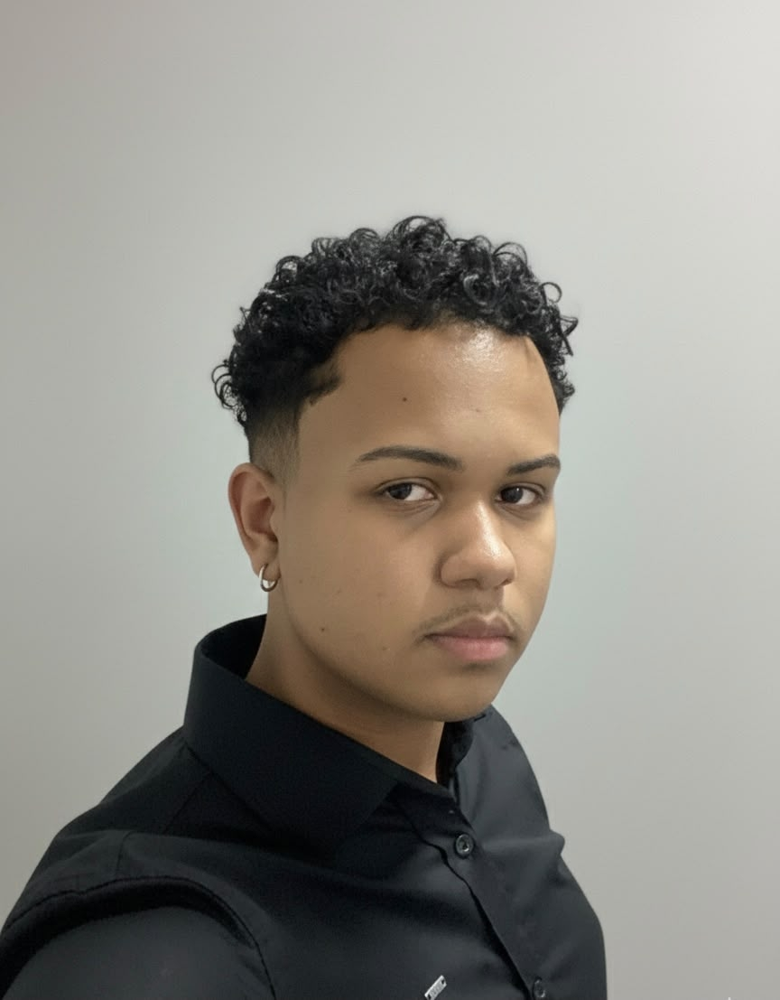

Estudante de Análise e Desenvolvimento de Sistemas
Luis Gustavo Gonçalves dos Santos
Estudo na UDF e sou técnico em Informática pelo CED Stella. Trabalho com licitações públicas na Progaia Engenharia e busco estágio em análise de dados ou TI.

Radar de Licitações Ambientais
Desenvolvi o Radar para apoiar a busca e a triagem de licitações ambientais e de engenharia na Progaia Engenharia. A equipe usa a planilha para consultar prazos, abrir editais e registrar decisões de triagem.
Conhecer o Radar